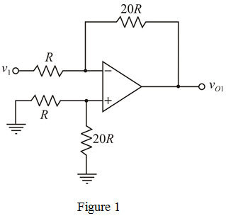
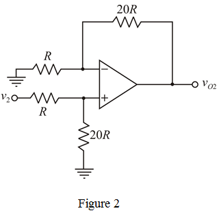

Step 1:
Calculate the output voltage by using super position theorem.
The total output voltage due to both source acting is,
 …… (1)
…… (1)
Here,
 is the output voltage due to
is the output voltage due to  source alone and
source alone and
 is the output voltage due to
is the output voltage due to  source alone
source alone
Consider voltage source,  acting alone, the modified circuit is shown in Figure 1.
acting alone, the modified circuit is shown in Figure 1.

Step 2:
Apply Kirchhoff’s current law at non-inverting terminal of the op-amp.
For ideal op-amp, the voltages at inverting and non-inverting terminals of the op-amp are same.
Apply Kirchhoff’s current law at inverting terminal of the op-amp.
…… (2)
Step 3:
Now, consider  source alone, the modified circuit is shown in Figure 2.
source alone, the modified circuit is shown in Figure 2.

Step 4:
Apply Kirchhoff’s current law at non-inverting terminal of the op-amp.
For ideal op-amp, the voltages at inverting and non-inverting terminals of the op-amp are same.
Step 5:
Apply Kirchhoff’s current law at inverting terminal of the op-amp.
Substitute for  in the equation.
in the equation.
…… (3)
Step 6:
Recall equation (1).
Substitute for  , and for
, and for  in the equation.
in the equation.
Substitute for  and for
and for  in output voltage equation.
in output voltage equation.
Therefore, output voltage,  is .
is .